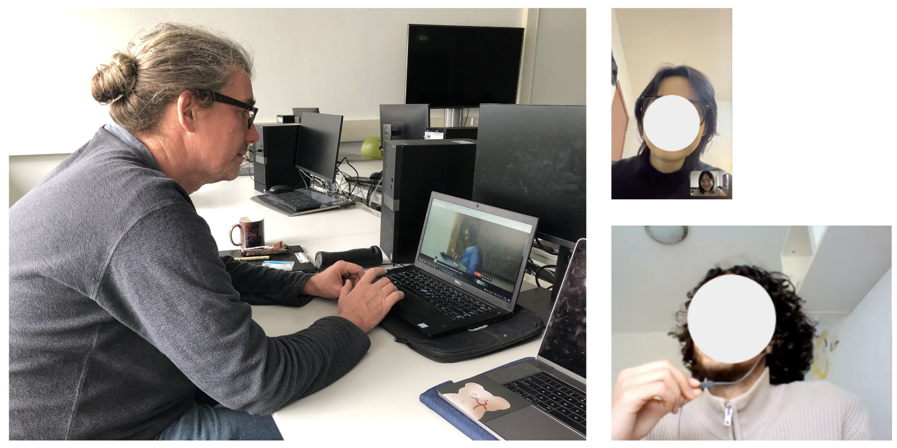
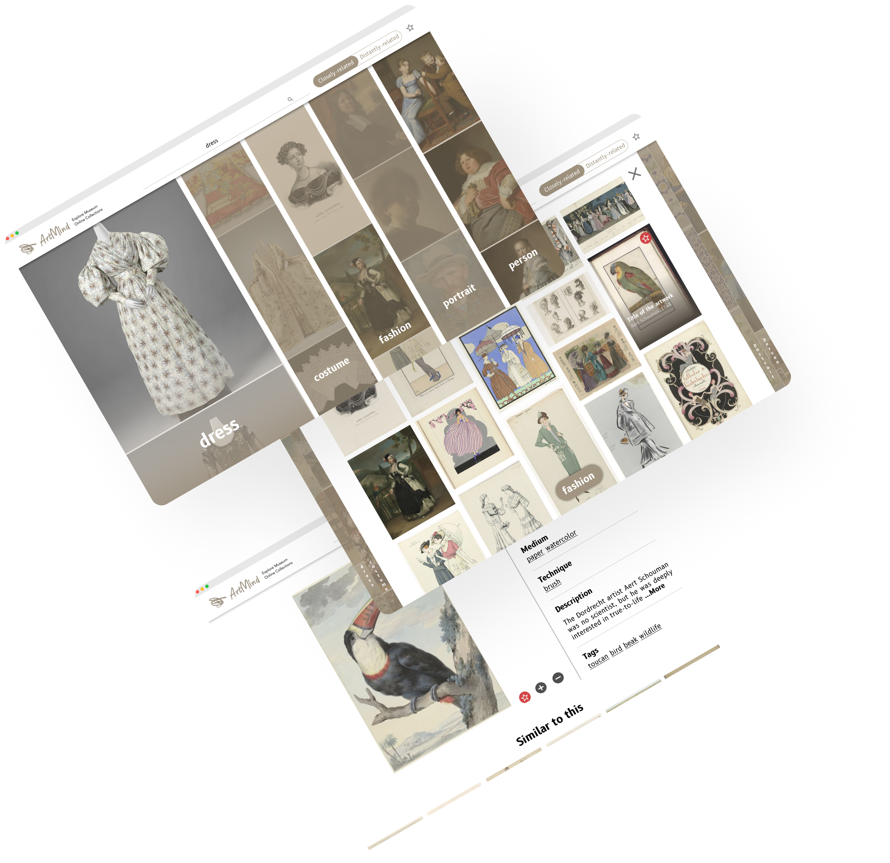
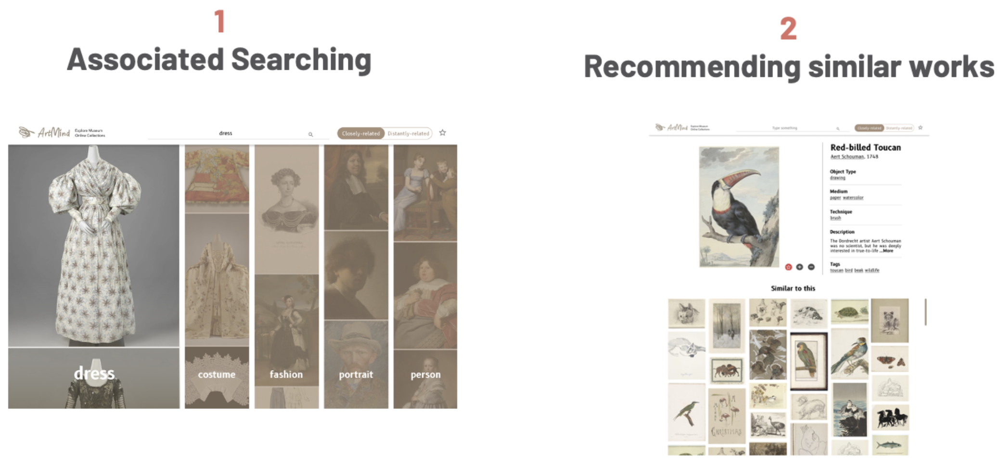
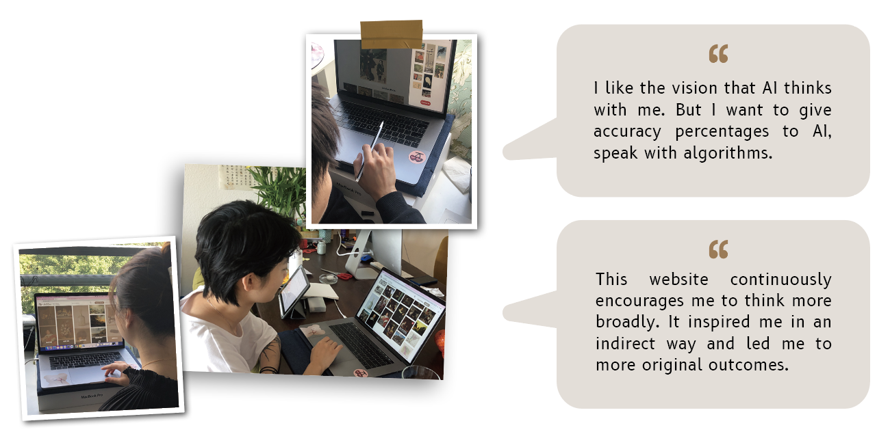
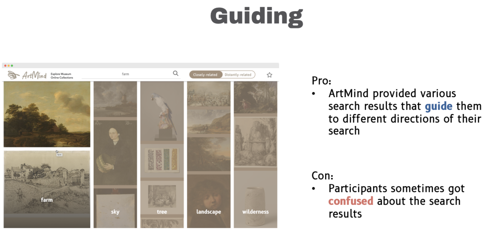
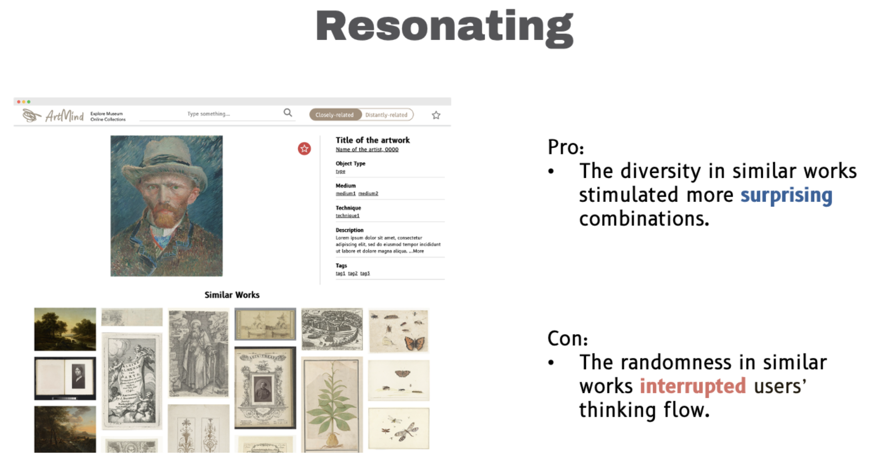
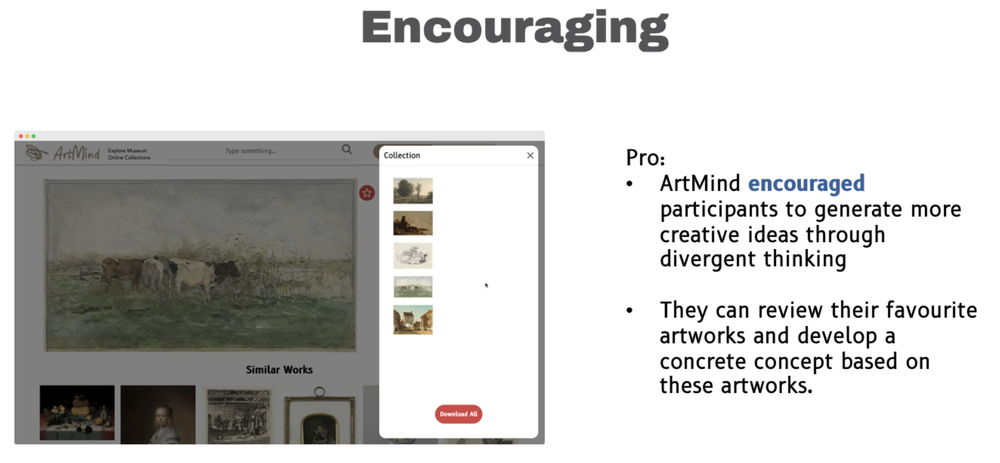

Artmind
OVERVIEW
In this digital age, more and more museums democratize their art by making their digital collections freely available online. However, these online sources are mainly targeted at researchers and visit planners who have specific search goals in mind. For inspiration-seekers who usually start with a vague idea, the current way of accessing museum digital collections–searching through metadata–limits their exploration. This project explored how to help novice artists seek inspiration in museum online collections.
MY ROLE
User research, Data analysis, Prototyping, UI design, Usability test
April 2022 - October 2022 (100 working days)
Context
Art is the universal language of humanity. Art viewing not only evokes aesthetic pleasure but also inspires people to create their own art. Photocopies of artworks became popular in the 20th century. Photos can be brought anywhere, they allow the audience to compare and evaluate artworks. Nowadays, it has become even more convenient, people can browse artworks online.
Museum Digital Collections
Highlights of the museum

Search through metadata

User segmentation
The study of Villaespesa (2019) defines three motivations of visitors of museum websites.
- Intellectually motivated users are researchers or students who conduct research on art history. They usually search through metadata because they have an in-depth understanding of the subject.
- Inspirationally motivated users are artists, hobbyists, and those who search for art images to stimulate their creativity.
- Visit planners are curious about what they can see in the museum. The highlights on the homepage are what they like to browse.
Explore
Researh Questions
Main: How to support creatives in seeking inspiration in digital collections?
- Who is involved in the inspirational process?
- What are the things they looking for to get inspired?
- Where do they find inspiration online?
- When do they need inspiration from digital art collections the most?
- Why do they need inspirational stimuli?
- How do they find inspiration?
User Study
Six creatives were invited to this study. There were artists from beginner to the professional level and one designer. They were interviewed and observed on how they usually seek inspiration online.
Conclusion
In general, museum collections are more valuable for beginner artists. Unlike professional artists who already learned a lot about art theory, beginner artists like to view museum collections to learn art techniques. Based on the interview findings, inspiration is the most important for artists after having initial ideas. Therefore, the target group of my design is narrowed down to novice artists who have initial ideas to start with.
Define
Design Goal
My design goal is to help novice artists seek inspiration in digital museum collections in a guiding, resonating and encouraging way.
Guiding
Guide the user through the process of seeking inspiration in museum online collections.
Resonating
Make users get closer to the feeling they are looking for, so that they can gradually build up their imaginary scenes.
Encouraging
Encourage users to take action after exploring the online collections.
Design
Research through Design
Research through design has been used to define the design direction. During the user research, four methods to find inspiration have been found. Prototypes were built to evaluate to what extent these methods help novice artists get inspired. The desired interaction qualities, guiding, resonating and encouraging, were used as the criteria to evaluate the experience with these prototypes.
Note: to get the last two prototypes working, you need to activate the Allow CORS Plugin.
Conclusion
- Diverging ideas through text associations
- Option for more surprising outcomes
- Missing the way to converge ideas
- End of the exploration
- Information Overload
Design direction: An online tool that allows users to make textual associations to diverge their ideas while also recommending them similar artworks to converge ideas.
Final Concept
My concept has two features that make it special from other museum websites This feature is designed to lower the search threshold for users with a vague search idea. By offering associated results, users will be guided to explore their initial idea in different directions. The second feature is recommending similar artworks that users might be interested in. It helps users narrow down their directions.
Evaluation
In order to evaluate to what extend my design solution has met the design goal and desired interaction, ten novice artists were recruited for the user test. Thinking out loud, interviews and observations were used to collect qualitative data.
   Contact Me
Let's work together, send me an email.